加拿大聯邦選舉與移民研究
畢業論文分析報告 · 易讀版
加拿大聯邦選舉與移民研究
呢個研究一共有十個部分，講解加拿大聯邦選舉（2000至2025年）嘅變化、 阿爾伯塔省、卑詩省、安大略省同魁北克省嘅人口同經濟狀況， 以及呢啲資料同香港人移民加拿大、搵工嘅關係。
目錄（撳左邊嘅按鈕去睇每一part）
- 選舉走勢 —— 全國各政黨得票率嘅歷史、2025年結果、各省投票情況
- 2025年預測 —— 用統計模型預測2025年選舉結果，同真實結果比較
- 人口年齡分佈 —— 加拿大唔同族群嘅年齡分佈
- 經濟概況 —— 四個省份嘅GDP、失業率、人工、職位空缺
- 人均GDP同年齡中位數 —— 四個省份嘅比較
- 香港人職業分析 —— 香港移民同「快速通道」（Express Entry）職業嘅關係
- 社交媒體情緒分析 —— 用Twitter（X）留言分析各政黨嘅民意
- 影響因素比較 —— 經濟 vs 社交媒體情緒，邊個更能預測選舉結果
- 教育程度分析 —— 邊種教育程度分類最能預測投票取向
- 年齡層投票模型 —— 預測2025年唔同年齡層嘅投票取向
💡 溫馨提示：每一頁嘅圖表同數字，都係直接嚟自已經運行完嘅研究筆記本（notebook）， 唔係假設或者估計出嚟嘅。圖表上面嘅文字仍然係英文（因為圖表已經整定咗）， 但係我哋喺圖表下面同上面加咗中文解釋，方便閱讀。
選舉數據分析
呢部分整理咗2000年到2025年，加拿大聯邦選舉每個政黨嘅得票率變化， 仲有各省份「實際投票人數」同「登記選民人數」嘅比較。
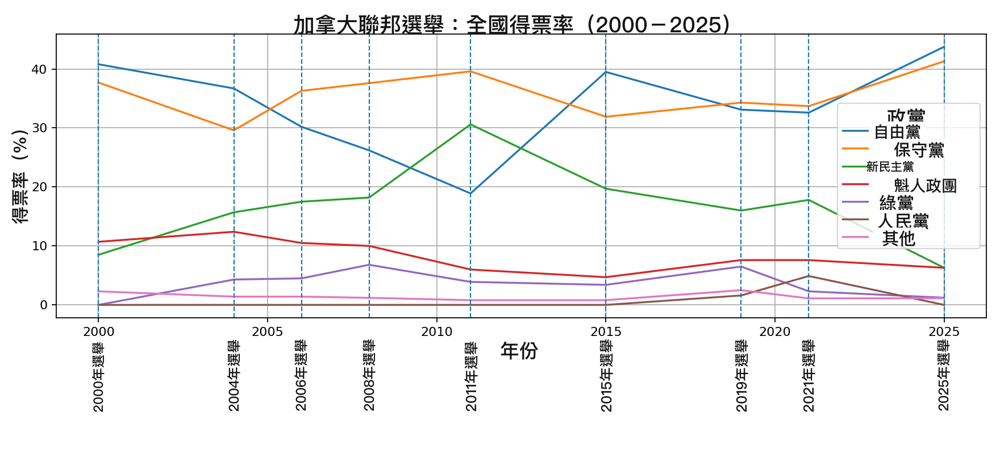
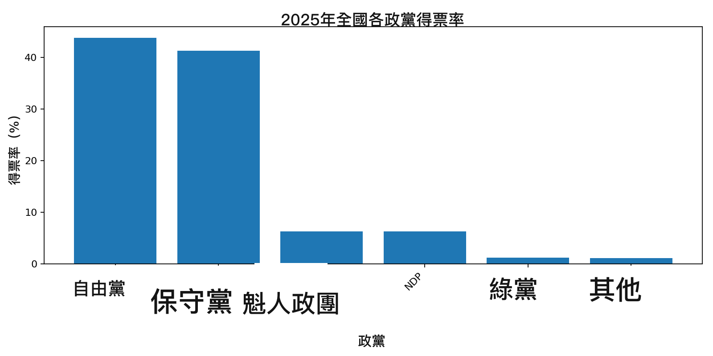
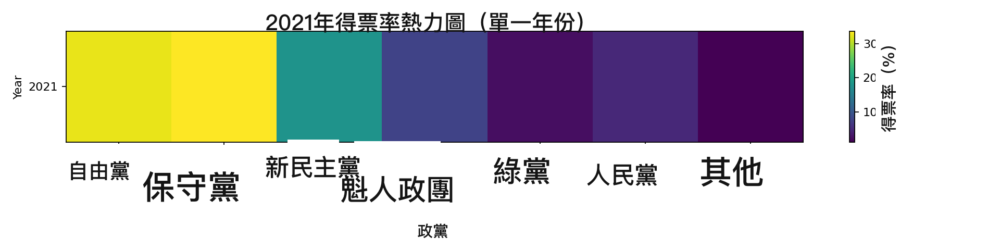
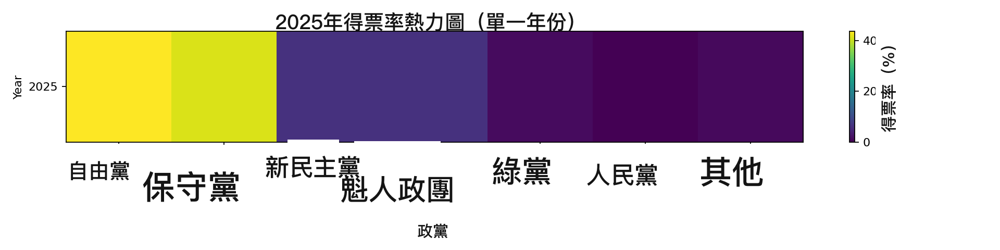
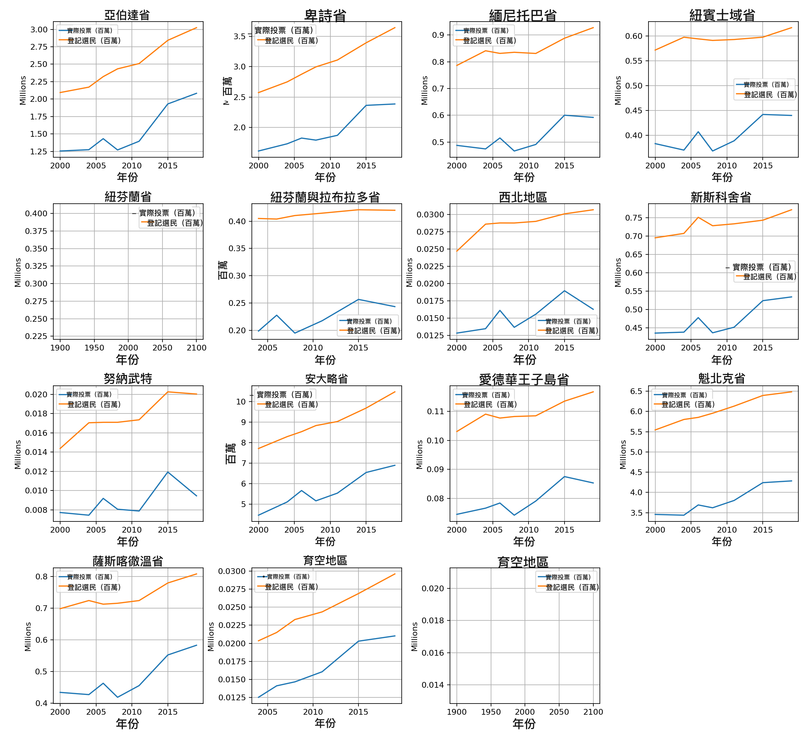
2025年選舉預測 vs 真實結果
呢部分用一種叫「貝葉斯階層隨機遊走模型」嘅統計方法（唔使理解太深奧， 簡單講就係一種根據以往選舉數據去推算未來趨勢嘅統計工具）， 只用2025年之前嘅選舉資料，去預測2025年各政黨嘅得票率，然後同真實結果比較睇下準唔準。
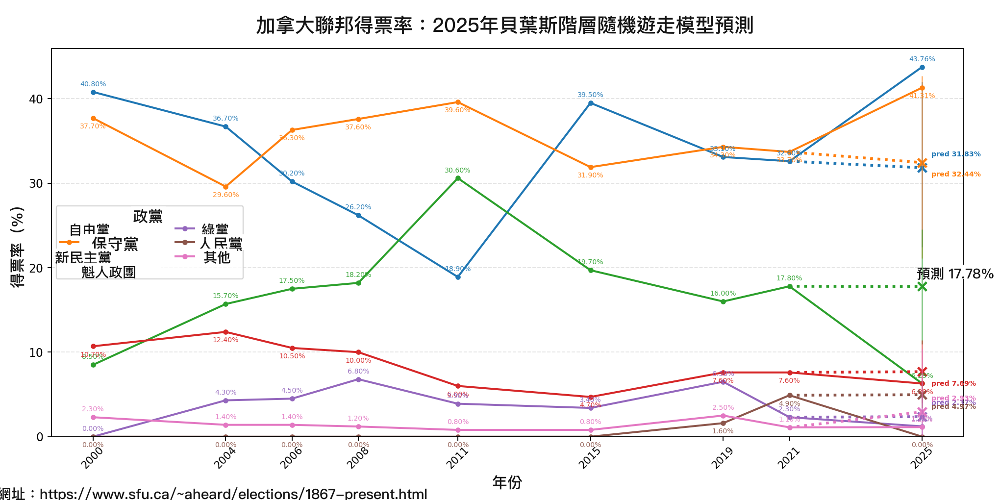
簡單講：呢個模型預測自由黨（Liberal）同保守黨（Conservative）2025年得票率好接近， 同真實結果差唔多，但係對細政黨（例如NDP）嘅預測誤差就比較大。
人口年齡分析
呢部分睇下加拿大唔同族群（例如：黑人、東亞人〔包括中國同香港〕、印度裔、白人） 嘅年齡分佈，用兩種方式表達：折線圖同熱力圖。
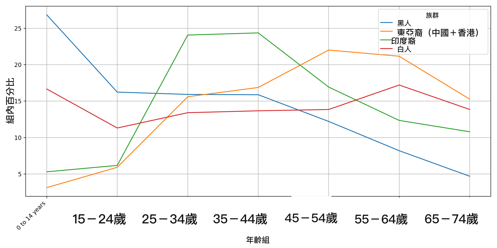
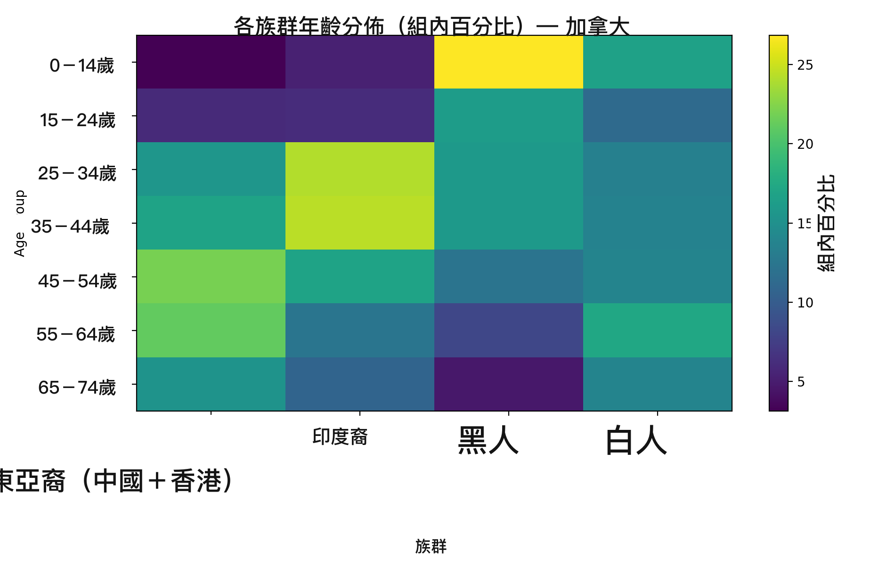
睇圖可以見到，東亞裔（包括香港、中國）人口喺25至44歲呢個年齡層比例最高， 代表呢個族群喺加拿大多數係中壯年人士。
四省經濟概況
比較阿爾伯塔（AB）、卑詩（BC）、安大略（ON）、魁北克（QC）四個省份， 2021年同2025年嘅人口、GDP（本地生產總值）、失業率、人工、職位空缺等數字。
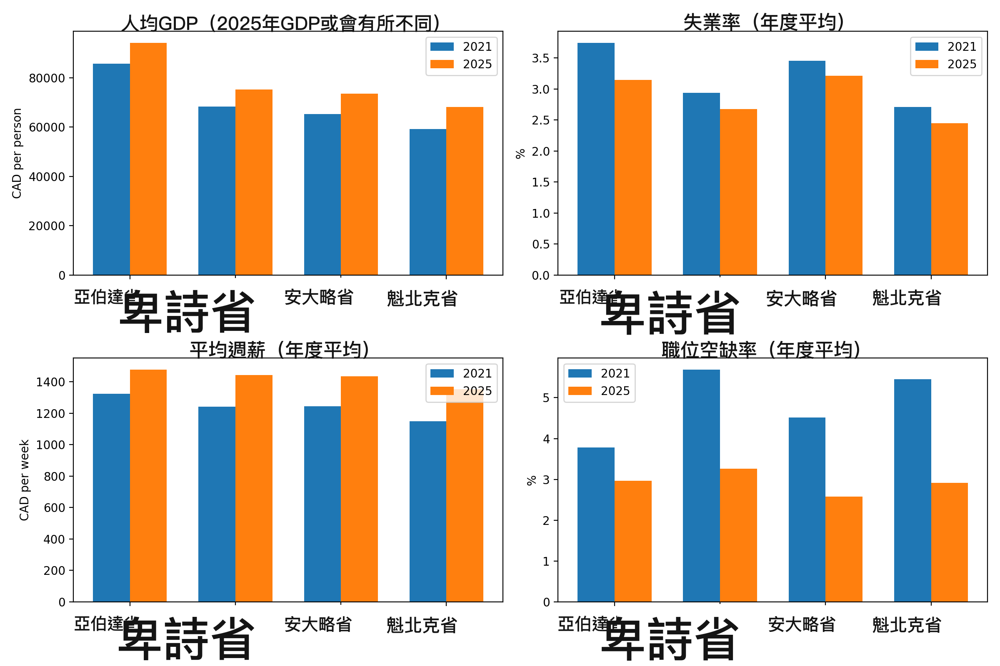
| 省份 | 年份 | GDP（生產總值） | 人均GDP | 失業率 | 平均週薪 | 職位空缺率 | 人口 |
|---|---|---|---|---|---|---|---|
| 阿爾伯塔 Alberta | 2021 | $3,801億 | $85,761 | 3.75% | $1,324 | 3.78% | 4,431,531 |
| 卑詩 British Columbia | 2021 | $3,570億 | $68,304 | 2.94% | $1,243 | 5.69% | 5,226,665 |
| 安大略 Ontario | 2021 | $9,701億 | $65,363 | 3.46% | $1,246 | 4.52% | 14,842,488 |
| 魁北克 Quebec | 2021 | $5,075億 | $59,200 | 2.71% | $1,149 | 5.45% | 8,572,020 |
| 阿爾伯塔 Alberta | 2025 | $4,739億 | $94,234 | 3.14% | $1,479 | 2.96% | 5,029,346 |
| 卑詩 British Columbia | 2025 | $4,291億 | $75,311 | 2.68% | $1,443 | 3.26% | 5,697,536 |
| 安大略 Ontario | 2025 | $1兆1,970億 | $73,625 | 3.21% | $1,436 | 2.58% | 16,258,260 |
| 魁北克 Quebec | 2025 | $6,168億 | $68,089 | 2.45% | $1,354 | 2.92% | 9,058,297 |
簡單講：阿爾伯塔嘅人均GDP同人工喺四省中最高，職位空缺率喺2025年亦都最低， 代表當地就業市場比較旺。
人均GDP同年齡中位數
呢部分將四個省份（AB、BC、ON、QC）2022年嘅「人均GDP」（即每個人平均賺幾多錢） 同「年齡中位數」（即一半人口比呢個歲數大，一半比呢個歲數細）擺埋一齊比較。
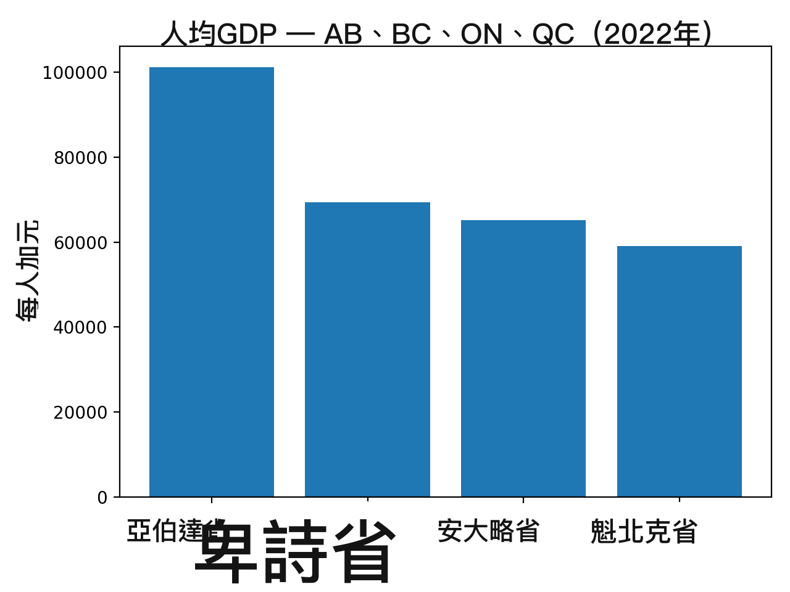
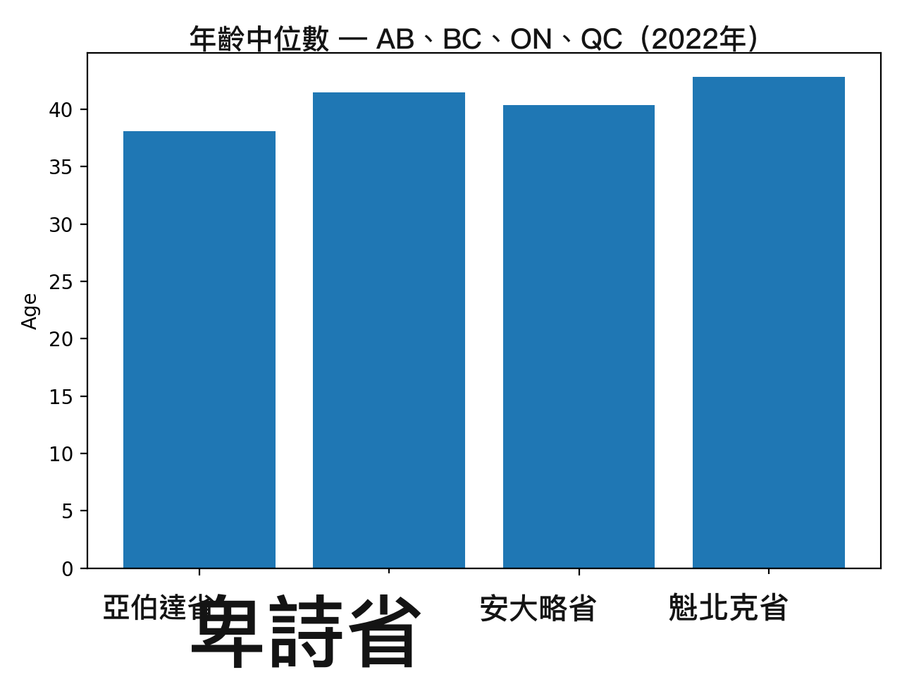
| 省份 | 年齡中位數 | 人口 | GDP | 人均GDP |
|---|---|---|---|---|
| 阿爾伯塔 Alberta | 38.1歲 | 4,512,731 | $4,564億 | $101,145 |
| 卑詩 British Columbia | 41.5歲 | 5,358,845 | $3,722億 | $69,456 |
| 安大略 Ontario | 40.4歲 | 15,155,836 | $9,878億 | $65,176 |
| 魁北克 Quebec | 42.8歲 | 8,669,963 | $5,128億 | $59,149 |
簡單講：阿爾伯塔嘅居民年齡係四省中最年輕，而且人均收入最高；魁北克居民年齡就係四省中最大。
香港移民同職業關係
呢部分將香港移居加拿大嘅永久居民（PR）人數， 同「快速通道」（Express Entry，一種加拿大技術移民計劃）嘅職業類別數據連埋一齊， 睇下香港人移民之後多數從事邊啲行業。
因為官方冇獨立公開香港人職業嘅統計數字，所以呢部分改用「快速通道」嘅整體職業數據做參考 （程式入面叫呢個做「EE_PROXY」，即係代替數據嘅意思）。
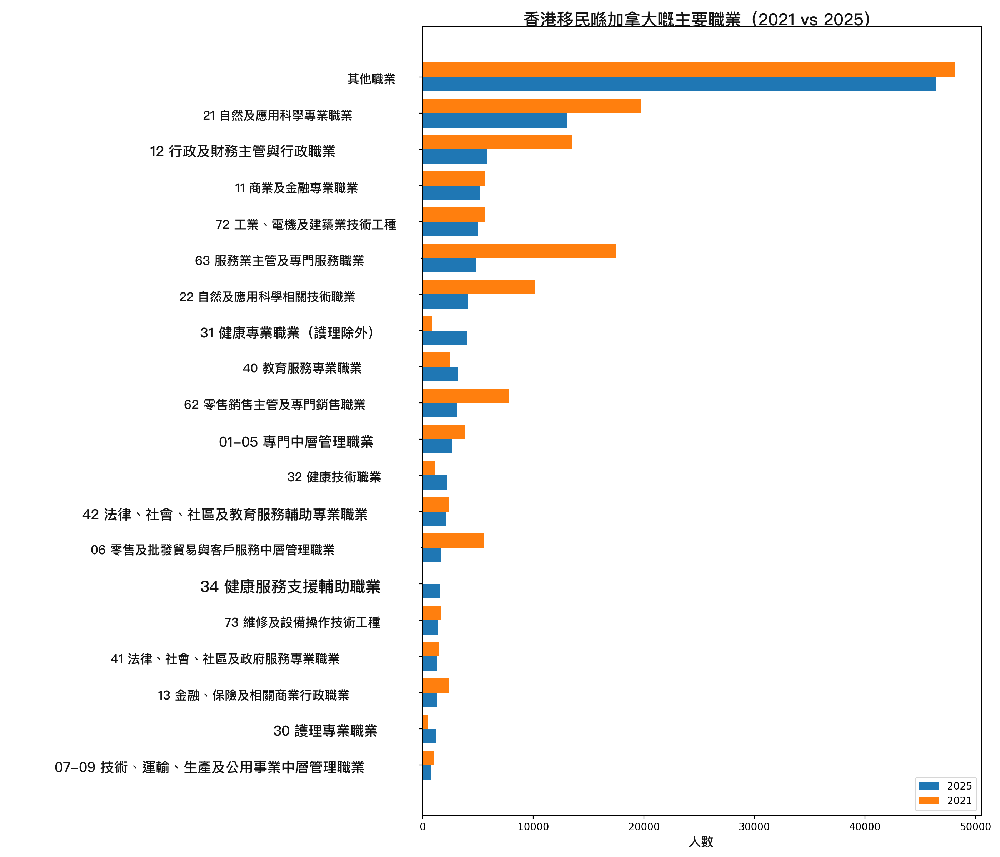
社交媒體（X／Twitter）情緒預測
呢部分淨係用社交媒體（X，即以前嘅Twitter）上面嘅留言數量同情緒， 去預測2025年選舉結果，再推算去2029年。2021年嘅資料嚟自2,086條實際留言 （分析咗1,902條），2025年就用一個叫「cardiffnlp」嘅AI情緒分析工具， 再重新分析1,651條唔重複嘅留言。
⚠️ 注意：因為攞唔到2025年X嘅歷史留言資料（API用完咗配額）， 所以2025年嘅數字係參考公開發表咗嘅圖表（Mozaik Analytics）推算出嚟， 並唔係直接由原始留言計算。
| 年份 | 政黨 | 留言數量 | 負面 | 中立 | 正面 | 支持指數 |
|---|---|---|---|---|---|---|
| 2021 | 自由黨 Liberal | 772 | 14 | 731 | 27 | 0.017 |
| 2021 | 保守黨 Conservative | 80 | 0 | 74 | 6 | 0.075 |
| 2021 | 新民主黨 NDP | 44 | 0 | 39 | 5 | 0.114 |
| 2021 | 魁人政團 Bloc Québécois | 13 | 0 | 13 | 0 | 0.000 |
| 2025 | 自由黨 Liberal | 802 | 17 | 761 | 24 | 0.009 |
| 2025 | 保守黨 Conservative | 139 | 1 | 133 | 5 | 0.029 |
| 2025 | 魁人政團 Bloc Québécois | 26 | 0 | 25 | 1 | 0.038 |
| 2025 | 新民主黨 NDP | 26 | 0 | 26 | 0 | 0.000 |
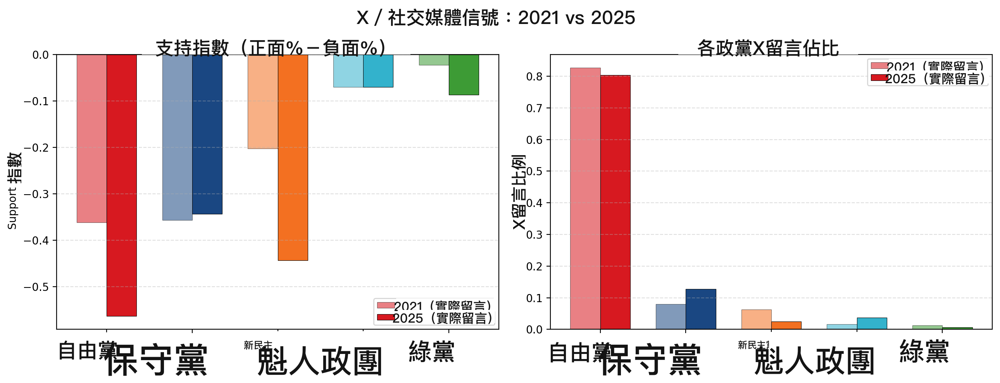


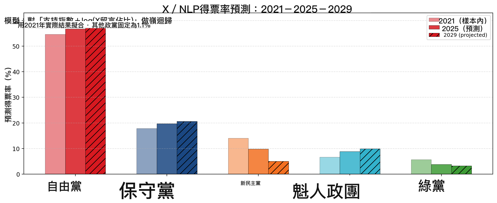
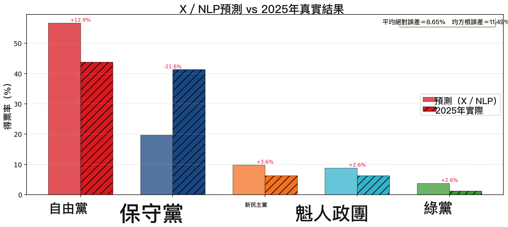
邊個因素最能預測選舉？
呢部分分別用「經濟數據」同「社交媒體情緒」呢兩種唔同嘅因素， 各自獨立去預測2025年選舉結果，再比較邊一個預測得比較準， 同埋邊一個因素對選舉結果嘅影響力比較大。
| 政黨 | 經濟模型預測 | 社交媒體模型預測 | 真實結果 |
|---|---|---|---|
| 自由黨 Liberal | 34.72 | 56.70 | 43.76 |
| 保守黨 Conservative | 35.30 | 19.70 | 41.31 |
| 新民主黨 NDP | 15.38 | 9.84 | 6.29 |
| 魁人政團 Bloc Québécois | 10.62 | 8.84 | 6.29 |
| 綠黨 Green | 1.89 | 3.81 | 1.22 |
| 其他 Others | 2.08 | 1.10 | 1.13 |
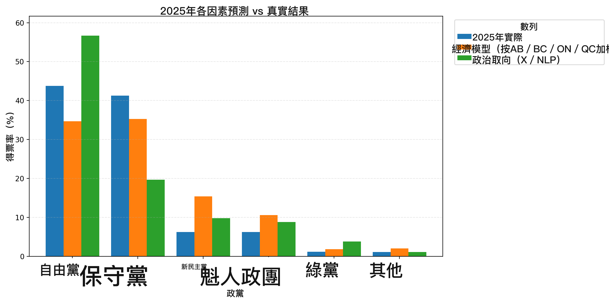
簡單講：整體嚟講，用「經濟數據」嚟預測會比較貼近真實結果； 「社交媒體情緒」雖然預測得唔太準，但係佢反映咗選舉前後民意變化幅度較大。
邊種教育程度最能預測投票？
加拿大統計局將教育程度分成好多種類別（例如：大學學士、碩士／博士、 高中程度等等）。呢部分測試每一種分類方法，邊一種可以最準確咁預測2025年選舉結果。
| 教育程度分類 | 預測誤差（越細越好） | 標準誤差 |
|---|---|---|
| 副學士／專科（Short-cycle tertiary） | 5.45（最準） | 7.77 |
| 大專／大學程度 | 5.65 | 7.67 |
| 初中或以下 | 5.73 | 8.51 |
| 大專非學位課程 | 5.73 | 8.07 |
| 學士學位 | 6.47 | 8.96 |
| 碩士／博士 | 7.11 | 9.83 |
| 高中程度 | 7.91 | 9.61 |
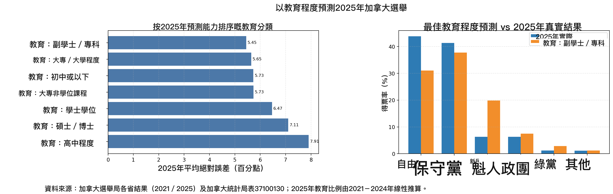
簡單講：「副學士／專科程度」嘅人口比例，係七種教育分類入面預測得最準嘅一種， 不過七種分類嘅準確度都差唔多，可見單靠教育程度嚟預測選舉結果，作用比較有限。
唔同年齡層點樣投票？
呢部分預測2025年唔同年齡層（18至34歲、35至54歲、55歲或以上） 嘅投票取向，方法係參考過去四屆選舉（2011、2015、2019、2021年）嘅 人口、投票率同民調交叉分析數據嚟推算。
| 年齡層 | 自由黨 | 保守黨 | 新民主黨 | 魁人政團 | 綠黨 | 其他 |
|---|---|---|---|---|---|---|
| 18–34歲 | 47.08 | 27.57 | 12.55 | 5.93 | 2.61 | 4.27 |
| 35–54歲 | 43.04 | 38.95 | 7.86 | 6.01 | 1.49 | 2.65 |
| 55歲或以上 | 41.80 | 39.84 | 5.84 | 8.43 | 1.55 | 2.55 |
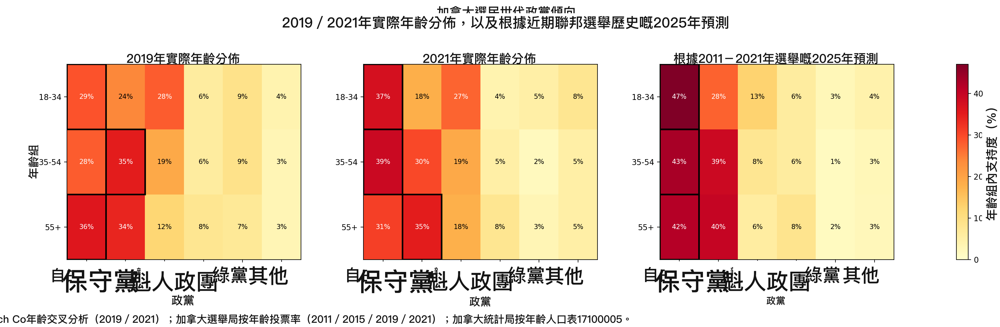
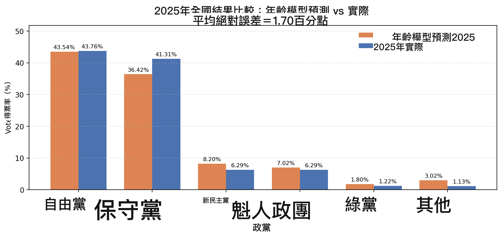
簡單講：唔理邊個年齡層，自由黨都係支持度最高嘅政黨。 不過後生（18-34歲）比較支持自由黨同新民主黨， 而年長人士（55歲或以上）就相對比較支持保守黨同魁人政團。
香港長者移民加拿大：適合度分析
呢部分用幾個實際因素——租金、金錢（退休收入）、生活成本、醫療保障、居住環境同家庭網絡——分析香港長者搬去加拿大住，到底適唔適合。所有金額都用2025年數據，港元按平均匯率（1加元≈5.6港元）折算成加幣方便比較。
① 租金：香港同加拿大一線城市差唔多，但貴過好多加拿大城市
以「一房／約430平方呎」嘅單位計，香港島同九龍嘅租金同溫哥華、多倫多相若，但比卡加利、滿地可貴接近一倍。如果接受搬去平啲嘅城市，住屋開支會明顯細好多。
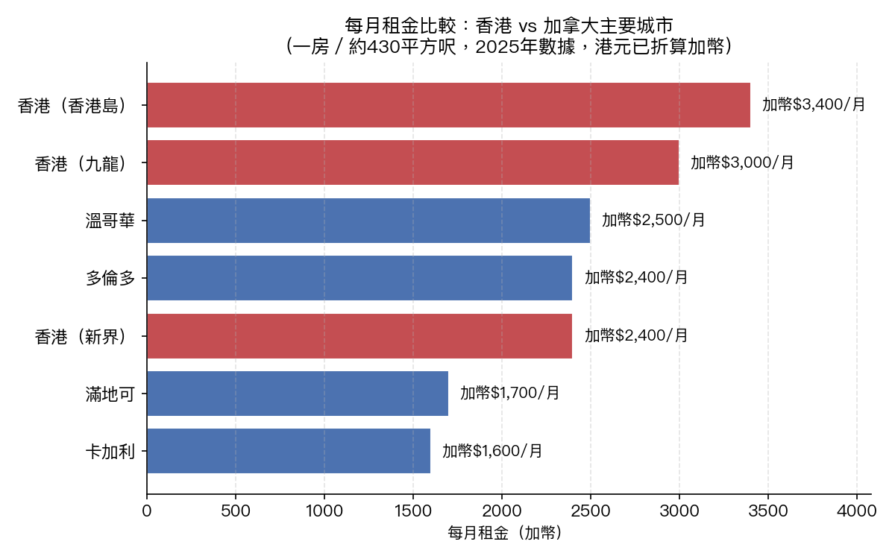
② 金錢：加拿大津貼較多，但新移民頭10年係拎唔到嘅
加拿大嘅長者退休津貼（OAS＋GIS）比香港長者津貼多，但有一個好關鍵嘅限制：要成為加拿大居民滿10年（18歲之後）先開始合資格，而且係按居住年期比例計。即係話，啱啱移民過去嘅長者頭10年係拎唔到任何政府津貼，要靠自己儲蓄或者家人供養。
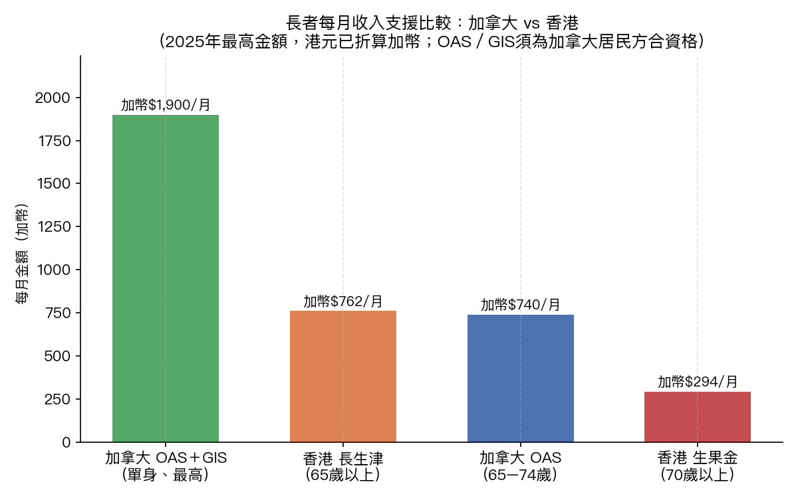
⚠️ 留意：香港嘅生果金／長生津有「居港限制」，要每年留喺香港住先繼續有得攞。一旦永久搬去加拿大，呢啲津貼會停，所以唔可以兩邊都攞。
③ 生活成本：扣除租金之後，兩邊每個月開支其實差唔多
基本使費（伙食、水電煤、交通、醫療自付）兩邊大約每個月都要加幣$1,200至$1,400，香港貴在伙食，加拿大貴在交通同藥費。
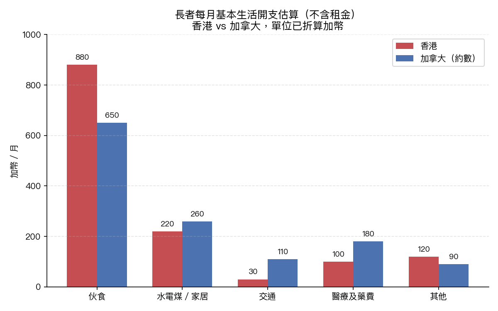
呢個係粗略估算，實際使費因人而異：香港食飯同街市買餸較貴，但長者有「兩蚊乘車優惠」；加拿大餸菜較平，但交通月票、藥費同牙科自付項目較多。
④ 醫療：加拿大公立醫療免費，但藥費、牙科同等候時間要留意
- 加拿大：公立醫院同睇醫生免費（合資格居民），但新居民多數有3個月等候期先至受保障；普通藥費、牙科、眼科、聽覺唔包，長者要另外買保險或者靠省級藥物計劃。
- 香港：公立醫療好平（專科門診約$50至$60港元），但輪候時間長；65歲以上長者每年有$2,000長者醫療券。
⑤ 整體適合度評分
以下用七個因素，為「留住香港」同「移民加拿大」打分（5分最有利）。分數係估算，用作比較參考：
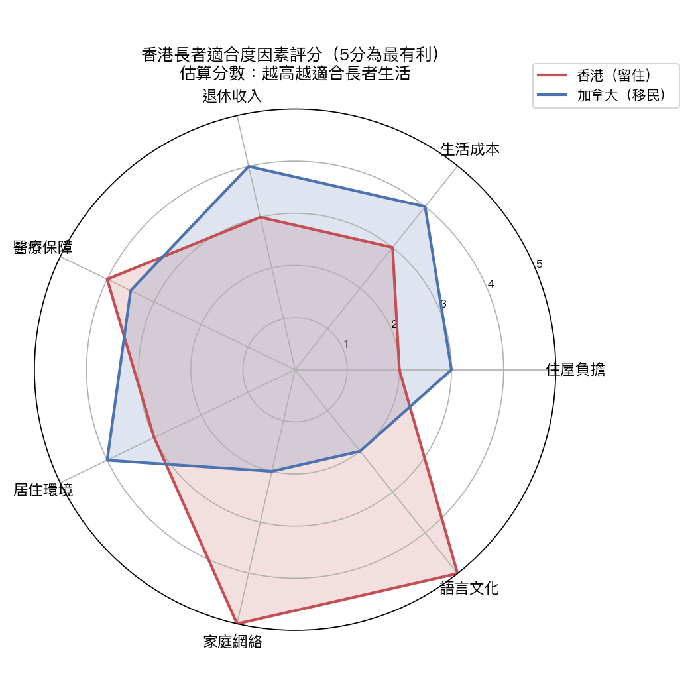
| 因素 | 香港 | 加拿大 | 解說 |
|---|---|---|---|
| 住屋負擔 | 2 | 3 | 香港租金貴；加拿大貴城市（溫哥華／多倫多）相若，但卡加利、滿地可平好多 |
| 生活成本 | 3 | 4 | 扣租後開支相近，但加拿大餸菜、生活空間相對容易負擔 |
| 退休收入 | 3 | 4 | 加拿大津貼較多，但新移民頭10年拎唔到，實際要睇儲蓄 |
| 醫療保障 | 4 | 3 | 香港公立醫療平而普及；加拿大免費但要等，藥費／牙科自付 |
| 居住環境 | 3 | 4 | 加拿大空間大、空氣好，但天氣凍、冬天長 |
| 家庭網絡 | 5 | 2 | 如果仔女已經喺加拿大，呢一項會完全反轉 |
| 語言文化 | 5 | 2 | 加拿大有列治文、萬錦等廣東話社區，適應會易啲 |
💡 移民渠道：加拿大冇專門畀長者移民嘅計劃。仔女要係加拿大永久居民／公民，先可以透過「父母祖父母擔保計劃」（PGP，要抽籤兼輪候好耐）或者「超級簽證」（旅客身份、可續期，但冇OAS／GIS等居民福利，仲要買私人醫療保險）接父母過嚟。